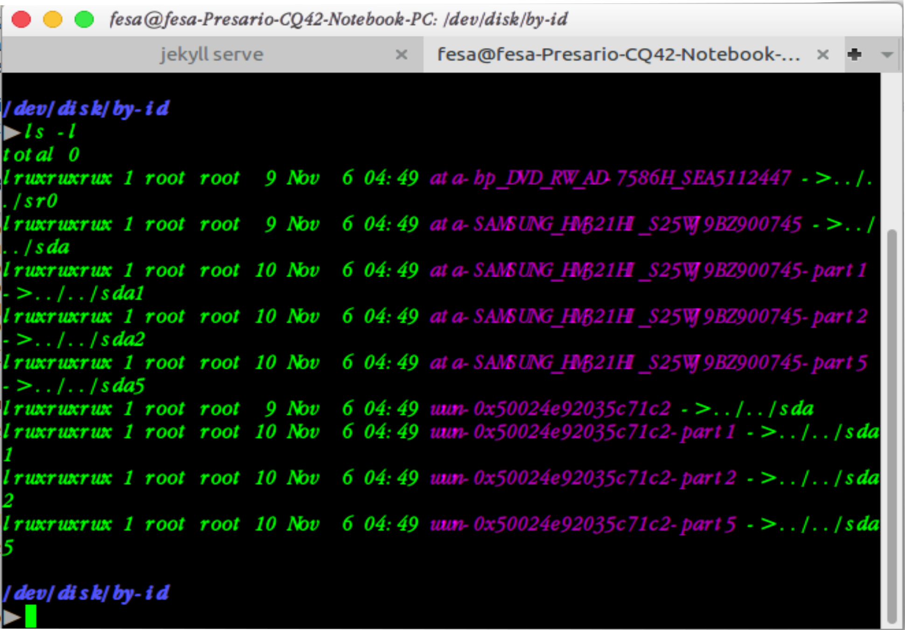

Pengertian Bootloaders :
Bootloaders adalah sebuah program yang mampu memberikan aksesibilitas untuk memodifikasi sistem, memverfikasi intergritas OS, menyediakan media untuk mengupdate perangkat, serta sebuah program yang berfungsi untuk memuat OS ketika hp dalam proses booting,selain itu bootloader itu memiliki 2 keadaan sob, yaitu locked (terkunci), dan unlocked (terbuka).
1. locked Bootloaders(terkunci) :
keadaan di mana bootloader masih dalam keadaan terkunci/tertutup, dan jika bootloader masih terkunci, maka aksesbilitas hp sobat masih sangat terbatas, atau dengan kata lain, belum bisa di pasangi custom rom, dan custom recovery, pokoknya masih terbatas banget deh.
2. Unlock Bootloader (Bootloader terbuka) :
kondisi dimana bootloader sudah dalam keadaan terbuka, sehingga aksesibilitas hp menjadi tidak terbatas atau dengan kata lain, HP sobat sudah bisa di root,di pasangi tweak, custom ROM, custom recovery.
Fungsinya :
Untuk melakukan booting pada sebuah computer maupun handphone.
Mengonfigurasi Bootloader :
Mungkin ini telah berfungsi, namun akan lebih baik jika mengetahui bagaimana mengonfigurasi dan menginstall bootloader jika dia menghilang dari Master Boot Record. Hal ini dapat terjadi setelah instalasi sistem operasi lainnya, seperti Windows. Informasi berikut dapat pula membantu Anda untuk memodifikasi konfigurasi bootloader jika diperlukan.
Master Boot Record (MBR) menempati 512 byte pertama pada hard disk pertama, dan merupakan yang pertama dimuat oleh BIOS untuk mengambil alih kontrol ke sebuah program yang dapat mem-boot sistem operasi yang diinginkan. Umumnya, sebuah bootloader terinstall di MBR, menghapus konten sebelumnya.
Mengidentifikasi Cakram :
Konfigurasi bootloader harus mengidentifikasi perangkat keras yang berbeda dan partisinya. Linux menggunakan berkas khusus “block” yang tersimpan dalam direktori/dev/, untuk tujuan ini. Sejak Debian Squeeze, pola penamaan untuk hard drive telah disatukan oleh kernel Linux, dan semua hard drive (IDE/PATA, SATA, SCSI, USB, IEEE 1394) sekarang direpresentasikan oleh /dev/sd*.
Setiap partisi direpresentasikan oleh nomornya pada disk di mana dia berasa: misalnya,/dev/sda1 merupakan partisi pertama pada disk pertama, dan /dev/sdb3adalah partisi ketiga pada disk kedua.
Arsitektur PC (atau "i386", termasuk saudara sepupunya "amd64" yang lebih muda) telah lama terbatas untuk menggunakan format tabel partisi "MS-DOS", yang hanya mengizinkan empat partisi "primer" per disk. Untuk melalui batasan ini, salah satunya harus dibuat sebagai partisi "perluasan", dan kemudian dapat memuat partisi tambahan "sekunder". Partisi sekunder ini harus bernomor dari 5. Maka partisi sekunder pertama dapat berupa /dev/sda5, diikuti oleh /dev/sda6, dst.
Keterbatasan lain dari format tabel partisi MS-DOS adalah itu hanya mengizinkan disk berukuran sampai dengan 2 TiB, yang menjadi masalah nyata dengan disk-disk terkini.
Suatu format tabel partisi baru bernama GPT melonggarkan kendala ini pada banyaknya partisi (itu mengizinkan sampai dengan 128 partisi ketika memakai setelan standar) dan atas ukuran disk (sampai dengan 8 ZiB, yang lebih dari 8 miliar terabita). Bila Anda hendak membuat banyak partisi fisik pada disk yang sama, maka Anda mesti memastikan bahwa Anda membuat tabel partisi dalam format GPT ketika mempartisi disk Anda.
Tidak mudah untuk mengingat cakram apa yang terhubung dengan SATA controller, atau pada posisi ketiga dalam chain SCSI, khususnya sejak penamaan hard drive yang tertancap (termasuk di antaranya kebanyakan disk SATA dan disk eksternal) dapat berubah dari satu boot ke lainnya. Untungnya, udev membuat tambahannya pada /dev/sd*, tautan simbolis dengan nama tetap, yang dapat Anda gunakan kemudian jika Anda ingin mengidentifikasi hard drive dengan cara yang tidak membingungkan. Tautan simbolis ini tersimpan di /dev/disk/by-id. Pada mesin dengan dua cakram fisik, misalnya, dapat ditemukan sebagai berikut:
Catat bahwa beberapa disk terdaftar beberapa kali (karena secara simultan berlaku sebagai disk ATA dan disk SCSI), namun informasi yang relevan utamanya dalam model dan nomor seri disk, yang dapat Anda temukan berkas peripheralnya.
Konfigurasi GRUB 2 :
GRUB (GRand Unified Bootloader) lebih baru. Tidak perlu menjalankannya setiap pembaruan kernel; GRUB tau bagaimana cara membaca sistemberkas dan menemukan lokasi kernel pada cakram dengan sendirinya. Untuk menginstallnya pada MBR pada cakram pertama, ketikkan :
$ grub-install /dev/sda.
Konfigurasi GRUB 2 disimpan dalam /boot/grub/grub.cfg, namun berkas ini (di Debian) dibuat oleh lainnya. Berhati-hatilah untuk tidak memodifikasinya secara manual, karena modifikasi lokal akan hilang ketika dijalankan update-grub (yang dapat terjadi ketika memerbarui berbagai paket). Modifikasi paling umum berkas/boot/grub/grub.cfg (untuk menambahkan parameter baris perintah ke kernel atau mengganti durasi menu ditampilkan, misalnya) dibuat melalui variabel dalam /etc/default/grub. Untuk menambahkan masukan ke menu, Anda dapat membuat berkas /boot/grub/custom.cfg atau memodifikasi berkas /etc/grub.d/50_custom. Untuk konfigurasi yang lebih kompleks, Anda dapat mengubah berkas-berkas lain dalam /etc/grub.d, atau menambahkan ke mereka; skrip-skrip ini mesti mengembalikan snippet konfigurasi, mungkin dengan menggunakan program eksternal. Skrip ini yang akan memerbarui daftar kernel untuk di-boot: 10_linux menangani kernel Linux yang terinstall; 20_linux_xen menangani sistem virtual Xen, dan 30_os-prober mendaftar sistem operasi lain (Windows, OS X, Hurd).